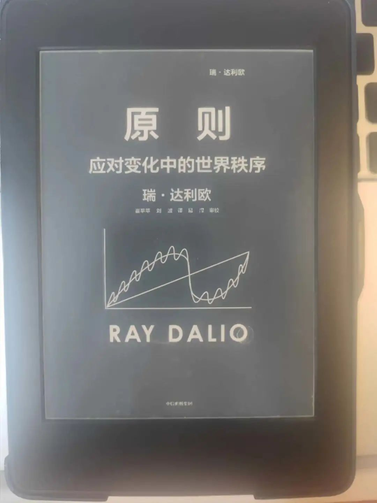
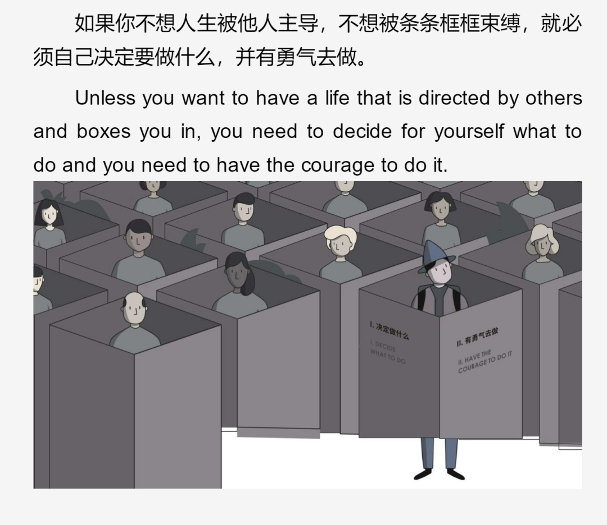

如何应对变化和混乱的世界
V姐万事屋 V姐来了 2022-05-17 23:10
原文链接(长) 原文链接(短)
Hi，我是V姐。
最近特别多声音，都对未来充满了恐慌。
经济底，市场底，至暗时刻，路线之争，大国博弈，国运大顶等等，每个都让人乌云压顶。
很多朋友已经把要求，从赚很多降低到活下来。
昨天讲房子的那篇，后台留言少数朋友情绪激动，我充分理解。
很多事情有它的客观规律，看到这个规律，或许就不容易 **把波动当做趋势**，也更容易找到应对方法。
今天跟大家分享最近看的一本好书，来自桥水基金创始人，瑞达利欧的《原则2：应对变化中的世界秩序》。

_（kindle除了压泡面，在封闭时还是有用的，想看书马上能看_ _）_
_“在我的一生中，没有哪个时刻像现在这样，如此多债务的利率都处于极低甚至负水平；在我的一_ _生中，财富、价值观和政治差距从未像现在这么巨大；在我的一生中，美国第一次遇到了真正的对手。中国已经在许多方面成为美国的竞争对手，并且在很多方面以更快的速度变得更加强大。_”
书中这句话，描绘出世界秩序变化的背景。
下面我摘录书中50个精彩的观点，分享给大家，这些原则或许可以帮你找到混乱中的秩序。 **市场瞬息万变，那些不变的东西，构成了我们理解世界的基石。**
1、就像生物存在生命周期一样，历史通常也是通过相对明确的生命周期，随着一代人向下一代人的过渡而逐步演进的。 **通过考察许多相互关联的历史事件，我可以看到这种演化的典型模式和因果关系，并以此为基础推断未来。**
2、我研究的所有帝国和王朝都是在典型的大周期中崛起和衰落的，这一大周期存在清晰的标记，我们可以看到自己所处的位置。这个大周期在以下两个时期之间产生更迭：
（1）和平与繁荣时期，具有强大的创造力和生产力，生活水平明显提高；
（2）萧条、革命与战争时期，财富和权力斗争此起彼伏，大量财富、生命和其他珍品被毁灭。
3、在一个周期中， **从一个极端到另一个极端的变化是常态，而不是例外。**
4、在人的一生中，重大的繁荣时期和重大的萧条时期 **只会出现一次**，除非我们研究几代人的历史模式，否则很难预料到这些时期的到来。我们就像蚂蚁一样，在短暂的一生中全神贯注于搬运面包屑，却无暇拓宽视野，发现事物发展的宏观规律和周期，及其背后的重要关联、我们在周期中所处的位置，以及未来可能出现的情况。
5、 **人类的生产率是驱动世界总财富、权力和生活水平逐步提高的最重要的力量。** 生产率是人均产出，受人类的学习、积累和发明的驱动。不同群体的生产率增速有差异，其原因总是一样的：不同的 **教育质量、创造力、职业道德** 以及将想法转化为产出的 **经济体制。**
6、获取知识和提高生产率固然意义重大， **但这个过程是渐进的**，不会给财富和权力及其持有者带来巨大的突变 **。巨大的突变来自经济繁荣、经济萧条、革命和战争。**
7、相比人类适应力和创造力的逐步上行轨迹， **动荡时期造成的影响微乎其微。不过在我们看来幅度似乎非常显著，因为我们是如此渺小，生命也是如此短暂** **。**
8、 **周期围绕着上行轨迹而反复出现。** 大多数事物是沿着一条具有周期性的上行轨迹发生的。这条轨迹就像一个上行的螺丝锥。
9、拥有大量储蓄、低债务和强大储备货币的国家能更好地抵御经济和信贷崩溃；储蓄少、大量负债，没有强大储备货币的国家抵御能力则较弱。
10、我们可以将国家兴衰分为三个阶段： **上升阶段，顶部阶段，下跌阶段。**
11. **顶部阶段，** 一旦国家开始找不到新的贷款人，那些持有国家货币的人就会设法出售和退出这种货币，而不是购买、存储、放贷和兑换它。这时，国家的实力开始衰落。
12、 **下跌阶段**，富人通常被加征税收，当富人担心自己的财富和福祉被剥夺时，他们会转向自己认为更安全的地方、资产和货币。这些资金外流会使国家的税务收入减少，导致典型的、自我强化的空心化趋势。
13、动荡不安的局势导致生产率下降，使经济总体规模缩小，招致更多的冲突，人们为如何分配日益缩减的资源而争斗。在这一时期，制度面临最大的挑战。因为它无法控制无政府状态。最有可能发生的是， **强有力的民粹主义领导人控制乱局和恢复秩序。**
14\. 对一个正在衰落的国家来说，一旦持有其储备货币和债务的债权人对其失去信心，开始抛售这些货币和债务，这就 **标志着大周期的结束** **。**
15、 **这些破坏时期重创了弱者，也确定了谁是强者** **。** 强者建立全新的规则（即新的世界秩序），为繁荣时期奠定了基础。在繁荣时期，随着债务泡沫滋生，贫富差距扩大，最终超过极限，导致债务泡沫破裂、新的压力测试开始。
16、 **创** **新发明 \+ 商业精神 \+ 兴旺发达的资本市场** =生产率大幅提升= **财富和权力增加**
17、纵观所有国家的历史， **财富拥有者也都拥有创造财富的手段，为了维持财富，他们与规则制定者和实行者合作。** 虽然情况一直如此，但具体方式已经演变，并将继续演变。
18、 **赚钱、储蓄和将储蓄转化成资本的能力是激励人们的有效动力，也帮助人们合理配置资源，提高生活水平** **。** 但资本主义也会造成财富和机会差距，这种差距是不公平的，可能产生负面作用，具有高度的周期性，可能破坏社会的稳定性。
19、大多数人和他们的国家最希望得到的是财富和权力，而 **货币和信贷对财富和权力增减的影响最大。**
20、由于 **一个实体的支出是另一个实体的收入，** 当一个实体削减支出时，这不仅会伤害自身实体，也会伤害依赖这一支出获得收入的其他实体。
21、在研究历史上的货币和债务周期时，我注意到 **长期债务周期（通常持续50~100年）**，这使我以截然不同的方式看待当前形势。
为了应对2008年全球金融危机，多国利率降为零，央行印钞和购买金融资产。我知道90年前就出现过同样的情况，因为我研究过20世纪30年代的经济危机。这些研究使我看到，央行提供大量货币和信贷如何以及为何推高了金融资产价格，也扩大了贫富差距， **让国家步入民粹主义和冲突的时代**。2008年后，我们看到这些驱动因素及其机制的重演。
22、债务违约会使其他实体的资产减少，迫使它们削减支出。这会使债务问题和经济萎缩加速恶化， **当人们为如何分配缩减了的经济蛋糕发生争辩时，就会酿成政治问题。**
23、与大多数人凭直觉想象的不同，货币和信贷并不存在固定的数量。 **央行可以很容易地创造货币和信贷。** 个人、公司、非营利组织和政府都希望央行发行大量货币和信贷，因为这会增强其消费能力。在信贷创造阶段，商品、服务、投资资产的需求和生产都很强劲，而在债务偿还阶段，两者都很疲弱。
24、通常情况下，债务人必须在一段时间内分期偿还最初的借款（本金）加上利息。
但是，央行有权将利率设定为零，并继续延展债务，这样债务人就永远不需要偿还债务。这相当于给债务人资金，但因为这些债务仍然被视为央行所拥有的资产，所以央行仍然可以说自己在履行正常的放贷职责。 **这正是新冠肺炎疫情引发经济危机后的情况。**
这种情况在历史上发生过多次。谁来买单？这不利于那些央行以外的实体，那些实体仍然以资产（现金和债券）的形式持有这些债务，却无法获得维持购买力的回报。
25、 **货币和信贷在发放时产生刺激性影响，而需要偿还时会产生抑制性影响** **，** 这就是货币、信贷和经济增长具有周期性的原因。
26、 **成为储备货币赋予一个国家极大的借款和消费能力，也给予该国巨大的权力，它能决定哪个国家获得国际交易所需的资金和信贷。**
27、货币贬值与货币失去储备货币地位不一定是一回事，即使两者都是债务危机造成的， **失去储备货币地位是长期大规模货币贬值的结果。**
28、导致 **重大内部冲突** 的典型有害因素包括：
(1)一个国家（或州、城市）及其民众处于糟糕的财务状态（如承担大量债务和非债务性义务）；
(2)实体内部的收入、财富和价值观存在巨大差距；
(3)受到严重的负面经济冲击。
29、一个体制要想成功，就要为大多数人创造繁荣。一个社会要想拥有和平与繁荣，就需要拥有惠及大多数人的生产率。
30、历史表明，如果 **将放贷和支出用于广泛提高生产率、使投资回报超过借贷成本的项目，就可以提高生活水平，同时偿还债务** **。** 这样的政策就是好政策。
31、历史表明，在 **贫富悬殊和经济不佳的情况下，政府进行增税和减支，这尤其是内战或某种类型革命的主要预示信号。**
32、当困难和冲突加剧时，人们更倾向于：刻板地把他人看作一个或多个族群的成员； **把这些族群要么看作敌人，要么看作盟友。**
33、在取胜成为唯一重要之事的时候，不道德的争斗就会以强化自身的方式愈演愈烈。 **几乎所有内战都有一些外国势力参与，它们试图影响内战的结果，使其对自己有利。**
34、如果一个国家的权力超过国家共同体的权力，那么权力更大的国家将会制定国际秩序。 **国际秩序与其说是遵循国际法，不如说是丛林法则。**
35、 以下两种情况爆发军事战争的风险最大：
(1)双方的军事实力旗鼓相当；
(2)双方在生存问题上存在不可调和的分歧。
36、国家之间的斗争主要有5种类别 **：** **贸易/经济战，技术战，地缘政治战，资本战和军事战。**
37、 在经济严重承压且存在贫富悬殊的时期， **国家通常会进行根本性的大规模财富再分配** **。** 以和平的方式进行，则是对富人大幅增税，显著增加货币供应（使债务人的负债贬值）；以暴力的方式进行，则是强制没收资产。
38、 因为美元是世界贸易、资本流动和储备的主导货币，是世界上最主要的储备货币，所以美国处在令人羡慕的地位： **能够为世界印钞并对其敌人实施制裁。美国现在拥有一个制裁武器库，这是美国使用最多的武器库。**
39、正是因为美国在全球取得了巨大成功，美元才成为世界主要储备货币，这使美国可以从全球其他地区（包括中国）过度借债。而过度借债使美国对其他国家（包括中国）大量欠债，将自己置于弱势地位，欠其他国家（包括中国）许多钱。 **其他国家也处于弱势地位，因为它们持有一个重债国的债务，而这个重债国还在快速增加债务，将债务货币化，向债权国支付的实际利率明显低于零。**
40、中国历史和哲学，其中最重要的是儒家-道家-法家-马克思主义哲学，对中国人的思维方式影响很大，比美国历史及其犹太教-基督教-欧洲哲学根源对美国人的思维方式的影响要大很多。
41、 **现在，中国在贸易、经济产出、创新和技术方面和美国不相上下，都是领先大国，而且是一个强大且迅速崛起的军事和教育大国。中国是金融领域的新兴大国，但在储备货币和金融中心地位上落后。**
42 **、发明创新显然是决定一国状况的最有利的因素。**
想想多少我们习以为常的东西是在过去150年里发明或发现的。这些东西在出现之前，是人们无法想象的，例如互联网（1983年）、在线搜索（1990年）、社交媒体（1997年）、Wi-Fi（无线通信技术，1998年）等。
**进步以巨大而稳健的方式展开，塑造未来，但这是通过我们无法想象的具体突破实现的。科技和技术就是以这种方式进化的。**
43、 **量子计算与人工智能** 的进步和更广泛的应用，将极大地提高学习和改进的速度，并带来全球财富和力量的变化。在未来5~20年里，这样的变化将在不同程度上发生，我相信这些变化叠加起来， **将带来前所未有的财富和力量大转移。**
44、债务/货币/资本市场/经济周期是驱动经济波动的最重要因素，这些经济波动对内外部政治与战争有重大影响，所以 **知晓各国在这个周期中所处的位置，对预测未来的可能情况至关重要。**
45、我也预计，由于我们能看到的原因以及目前还看不到的很多其他原因， **人类寿命将在未来20年里大幅延长（延长20%~25%或者更多）。**
46、长远来看， **最大的风险是“货币价值”风险，** 而大多数人对此重视不足。
有巨额赤字的储备货币国家，其赤字和债务是以本国货币计价的，所以因这些国家能通过印钞来还债，它们就能把风险从债务人自身转移给持有债务的债权人。主要风险不是这些大债务人会违约，而是 **债权人持有的资产将会贬值** **，** 即持有债务资产带来的回报率将低于通胀率。【 _备注：昨天文章提到黄奇帆讲人民币不能锚定美元，就有这个考虑_ _】_
47、 **储备货币背后的基本面使得持有以它计价的债务不划算时，储备货币的地位就会急剧下坠。** 储备货币下坠速度很快，因为储备货币的衰落速度快于支付给债务持有人的利率的下降速度；净损失导致抛售，抛售导致更多损失，形成自我强化的恶性循环。
荷兰盾和英镑都曾以这种方式下坠，原因是当存在以这两种货币计价的巨额债务时，发生了地缘政治危机/战败。
48、哪个国家赢得博弈，获得最多的财富和力量， **主要取决于其内部能力。**
49、未来10年里，最重要的动态是 **短期债务/货币/经济周期（也称商业周期）、内部政治周期、中美之间不断升级的冲突和日益降低的相互依赖。**
短期债务/货币/经济周期包含着一些交错的时期，有时央行通过创造货币和信贷来刺激经济，接着又试图通过减少货币和信贷的流动来给经济降温。 **央行始终无法把这个工作做得十全十美，这就会导致过度带来泡沫和泡沫破裂，周期又重新开始。**
最近的一个周期始于2020年4月，当时美国政府实施了有史以来最大规模的财政和货币刺激。此前的一个周期始于2008年，当时的刺激规模也很大，不过远不如2020年。再往前的几个周期分别始于2001年、1990年、1982年、1980年、1974年、1970年和1960年等。
50、 **如何应对已知与未知？**
(1)要了解所有的可能性，考虑最坏的情况，然后 **想办法消除无法忍受的情况。**
(2 **)** **分散风险。**
(3)首先考虑 **延迟满足** 而不是当下满足，这样你将来会过得更好。
(4) **与最聪明的人反复沟通。**
* * *
最后再跟大家分享一点读书心得吧。
很多朋友讲《原则》那本书很枯燥，不太看得下去，我个人觉得这本《原则：应对变化中的世界秩序》可读性会强很多。里面的案例更加具体，抽象词汇不多，非常适合对于经济和宏观趋势感兴趣的朋友。
另外，如果你家里有小朋友，也推荐这本《原则：绘本版》，去做亲子共读。10岁以上的孩子，也可以独立阅读。
这本书不太涉及经济，更多是关于人生的一些法则以及事物发展的规律，给小朋友讲解的话，会更加考验大人的积累。
大道至简，能否把真正有用的知识，让孩子在小的时候就懂得并且真正接受，是为人父母一项巨大的考验。
